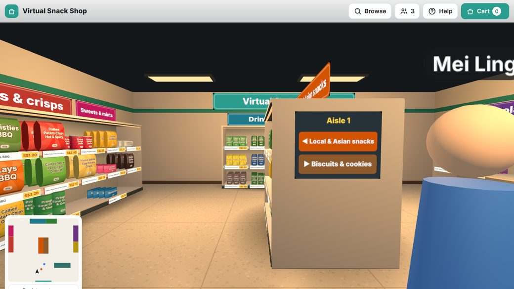
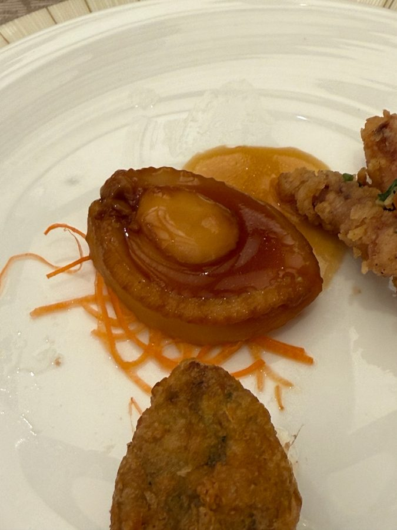
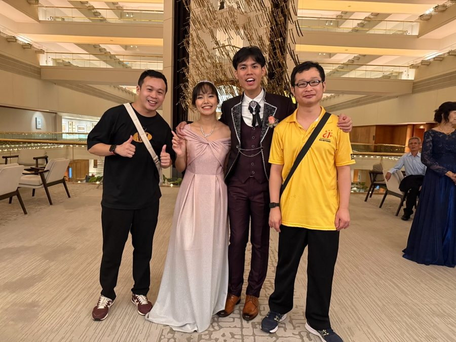
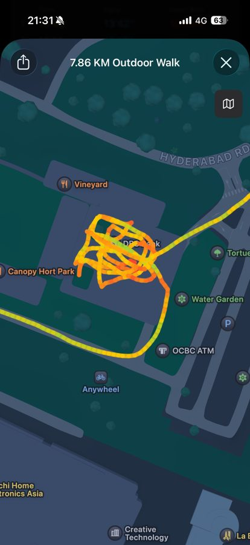
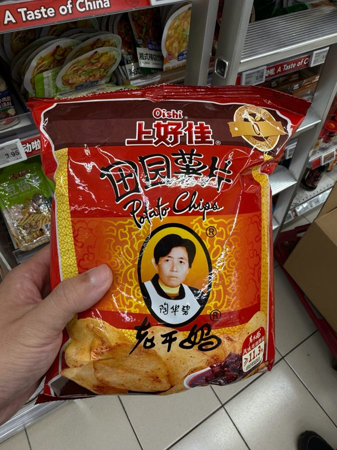
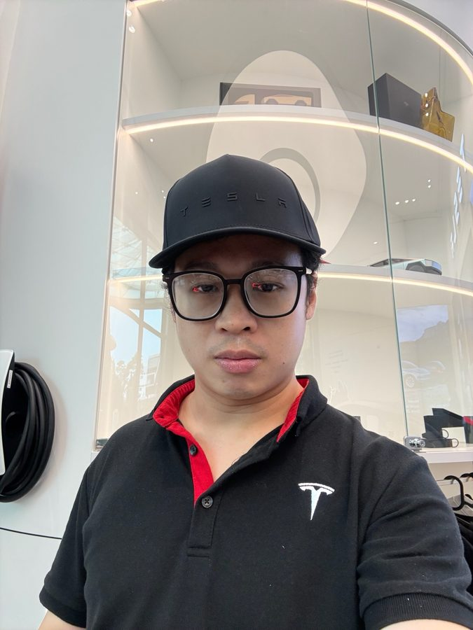

Summary
R&D scientist (PhD, structural biology) with industrial experience in enzyme engineering, biocatalyst development and protein process development. At Allozymes, on the two-person core team behind two industrial enzyme-engineering projects, engineering a DMSO-tolerant glucose dehydrogenase that keeps working where the wild type fails. Covers the full loop from variant design and cloning to screening, expression, formulation and lyophilization, backed by a 2.9 Å Cryo-EM structure and peer-reviewed publications.
Featured structure

The QmcA–YbbJ complex
A membrane protein cage built from 26 heterodimers of the SPFH-family protein QmcA and its NfeD partner YbbJ, from E. coli. Solved during my PhD at NTU and published in Structure (2024) as co-first author.
View on the Protein Data Bank →Turn it around in 3D →Read the paper →
Experience
-
Scientist I
Nov 2025 – PresentAllozymes Pte Ltd · Singapore
- On the core team (of two) for two confidential industrial enzyme-engineering projects: one improving glucose dehydrogenase (GDH) activity and solvent tolerance for cofactor recycling, the other targeting a separate industrial application.
- Developed and validated high-throughput screening workflows (UV-Vis plate reader, GC, HPLC), and characterized activity, stability, solvent tolerance and cofactor specificity under industrially relevant conditions.
- Built and screened large variant libraries to engineer DMSO-tolerant GDH; the lead mutant kept working where the wild type gave up (60% activity at 60% DMSO, versus <10%).
- Designed cloning workflows (Golden Gate, Gibson, site-directed mutagenesis) and optimized recombinant expression, induction and cultivation conditions.
- Developed and transferred a lyophilized-protein stability assay (reconstituted GDH activity via NADH formation) to track week-by-week activity retention; lyophilized powder kept at least 75% activity after 22 days at both 4 °C and −20 °C.
- Contributed to downstream process development (lysis optimization, formulation, lyophilization workflows) and authored SOPs to support reproducibility and knowledge transfer.
-
Postgraduate Researcher
Aug 2021 – Aug 2025Nanyang Technological University (NTU) · Singapore
- Led a multi-year structural biology project on membrane protein complexes, solving a 2.9 Å Cryo-EM structure of the QmcA–YbbJ complex, a 26-heterodimer cage (co-first author, Structure, 2024).
- Optimized recombinant expression and purification workflows to improve throughput and sample quality; applied Cryo-EM and MALDI-TOF/TOF for structural characterization.
- Planned experiments, delegated work and guided 4 junior researchers through execution and troubleshooting; presented findings to scientific stakeholders.
- Supported 2 classes of 30+ students, training them in Python.
-
Research Assistant
Jul 2020 – Jul 2021Nanyang Technological University (NTU) · Singapore
- Built bioinformatics data-mining pipelines and biological databases.
- Conducted MALDI-MS-based enzymatic activity screening; supported laboratory operations, safety compliance and project execution.
-
Admin Executive
2014 – 2016Oneberry Technologies Pte Ltd
- Compiled case reports that supported law-enforcement action against high-rise littering.
Core technical expertise
Protein & enzyme engineering
- Directed evolution
- Rational design
- Site-directed mutagenesis
- Saturation mutagenesis
Biocatalysis & screening
- Activity screening
- Cofactor recycling
- High-throughput screening
- Assay development
- Stability testing
Analytics
- UV-Vis plate reader
- GC
- HPLC
- MALDI-TOF/TOF
Molecular biology
- Golden Gate Assembly
- Gibson Assembly
- Cloning workflow design
- Recombinant protein expression
Protein production & process
- Expression & purification
- Induction / cultivation optimization
- Lysis optimization
- SDS-PAGE
- Formulation
- Lyophilization
- SOP authoring
- Workflow transfer
Structural biology
- Cryo-EM
- Protein complex characterization
Computational
- Python
- Bioinformatics
- GraphPad Prism
Publications
-
Research article · Co-first author
Cryo-EM structure of the SPFH-NfeD family protein complex QmcA-YbbJ
Tan KA*, Qiao Z*, Lim ZZE, Yeo JY, Yong Y, Do PH, Ero R, Gao YG. Structure 32(10):1603–1610 (2024). doi:10.1016/j.str.2024.07.022
*co-first authors -
Review
Structural insights into the membrane-bound proteolytic machinery of bacterial protein quality control
Ero R, Qiao Z, Tan KA, Gao YG. Biochemical Society Transactions 52(5):2077–2086 (2024). doi:10.1042/BST20231250
Education
PhD in Biology
Feb 2026Nanyang Technological University (NTU) · NTU Research Scholarship Awardee
Thesis: Structural studies of Stomatin, Prohibitin, Flotillin and HflK/C (SPFH) family proteins QmcA and YqiK in E. coli
BSc Applied Physics
2020Nanyang Technological University (NTU) · Honours, Second Upper
Diploma in Aerospace Systems & Management
2012Nanyang Polytechnic
Leadership & beyond the bench
Volunteer Leader
2024 – PresentLed teams of 10+ volunteers across National Day Parade, Chingay and River Hongbao.
Residential Mentor
2022 – 2025Co-organized and hosted 5 Apple Crumble baking events.
National Service
2012 – 2014MG Team Commander; led an MG team supporting infantry platoon operations.
Side project

Virtual Snack Shop
An online shop you walk around in first person, which I am building with AI as my pair programmer. Customers browse 3D shelves in the browser, pick snacks up to inspect them, and pay by PayNow.
- First-person 3D in the browser
- Live stock
- Orders held at checkout
- See other shoppers
- Product & stock manager
- three.js
- Supabase
Outside the lab
- Apprentice vibe-coderLearning to build software by describing it, one small shop at a time.
- HikingHappiest on a trail.
Life, lately · scroll →







Open to collaborations
Enzyme engineering, structural biology, or something that mixes the bench with code — I would be glad to hear about it.
Get in touch